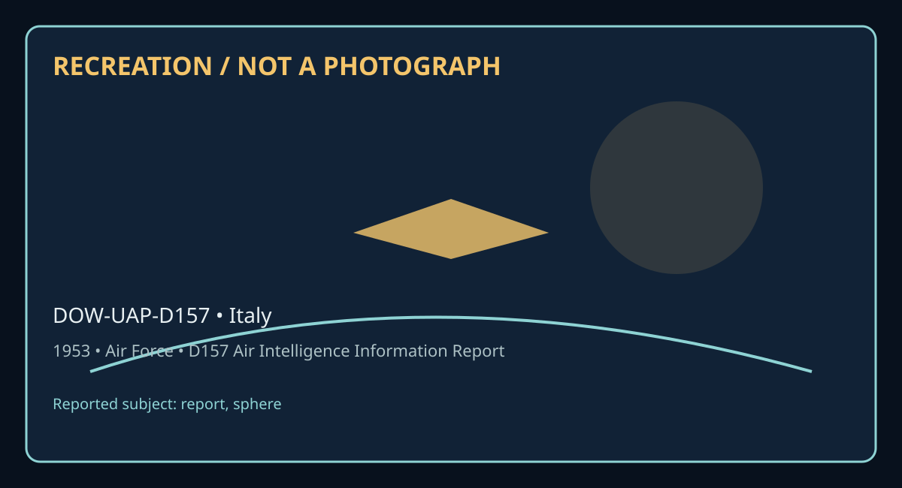

Release 07 / archival case file / DOW-UAP-D157
D157 Air Intelligence Information Report Italy 1953
This d157 air intelligence information report places a report, sphere thread in a 1953 Italy record.
ID: DOW-UAP-D157
Filename:
DOW-UAP-D157-Air-Intelligence_Information-Report-Italy-1953.pdfDate marker: 1953
Location: Italy
Agency or collection signal: Air Force
Pages read: 5

RECREATION / NOT A PHOTOGRAPH. The diagram is an interpretive editorial aid, not source imagery.
What this document says
The opening page's extracted text begins: “-· u AF FORM 112 • APPROVED 1 JUNE 1"48. ~ COLllfTRY ITALY SUBJECT REPORT NO. 8 5 I -700- 3 AIR INTELLIGENCE INFORMATION REPORT (UNCL) Report of Unusual Aerial Pheonmenan AREA REPORTED ON f'RON (Ag<ntfl) Italy Air Attache, Rome, Italy DATE OF REPORT 15 December 1953 I D-'TE or 1Nro;st I EVALUATION D-4 PREPAAED BY (OJ!i.ur) SOURCE JOSEm A. WOIDA, Lt Col USA.F, Aotg AirA Prof. G. B. Sias REFERENC£S (Oontrol ,iumbn, d1r,.,t1,., pr.,,/ou• rtporl, de., •• applleabu) SUM MARY: (Em~ concise wmmarv of r"IJDTI. Gi•c olgnlfi«mce In final one-.,rnten« paragraph. Ll<t facl04Urtf at lower le/I. &gin'"' o/rcpo,-t on A.E Form I II-Part fl.) 1. This IR transmits a report of unusual aerial pheonomen:inwitnessed by Prof'. G. B. SIAS on the 28th of August 1952~ in Sassari, Sardinia. 2. COMMENTS of the Preparing Officer: Prof• Sias was interviewed by this officer a.nd be appeared to be in telligent, pleasant, and very eager to tell his story-. He, in his own mini, is con vinced that either: (1) The United States has made scientific strirles unknown to the rest of the world and this particular phenomenon was one of these items; or1 (2) This particular phenomenon was super-natural or it was instituted by another government in Italy. Prof. Sias appeared to be a very intense individual and, while not exactly fanatic, I believe that this title comes very close to :fitting him. Enclosure #1 is a sketc”
Across the 5 pages, the recurring terms are report, sphere. Those details belong to this file, not to a generic case template. Page-level reading follows:
- Page 1: -· u AF FORM 112 • APPROVED 1 JUNE 1"48. ~ COLllfTRY ITALY SUBJECT REPORT NO. 8 5 I -700- 3 AIR INTELLIGENCE INFORMATION REPORT (UNCL) Report of Unusual Aerial Pheonmenan AREA REPORTED ON f'RON (Ag<ntfl) Italy Air Attache, Rome, Italy DATE OF REPORT 15 December 1953 I D-'TE or 1Nro;st I EVALUATION D-4 PREPAAED BY (OJ!i.ur) SOURCE JOSEm A. WOIDA, Lt Col USA.F
- Page 2: J ·• I E AF FORM 112-PART II APPROVED I JUNE 1948 ....: .. AIR INTELLIGENCE INFORMATION REPORT FROM (Agt11cv) Air Attache, Rome, Italy REPORT NO. 2 5 PAGE OF PAGES TRANSLATIOM REPORl' AND ILLUST TIO OF A F.LYI?il SPH Ooservation by Pro!. o.B. SIAS - Via Armando Diaz 22, Sassari TO TH CCR&DITJ!iD ro THE ITALIAN GOV RNMPH1' APP ITION OF A FLnNG SPHERE 'On the
- Page 3: tED .J AF FOlfM 112-PART II APPROVED 1 JUNE 19~ AIR INTELLIGENCE INFORMATION REPORT FROM (Agency) Air A.ttache, Rome• Italy REF'ORT NO. .3 5 PAGE OF PAGES ALTITUDE AND DIM™SIONS OF THE SPHERE "The observation of the sphere, the peculiar circumstances of its apparition and the logical deductions, inspired me with a pressing desire, rather a stimulating impuls
- Page 4: & FROM (Aoenc~) REl'ORT NO. Air Attache, PAGE 4 OF 5 PAGES atis This T nol; was like non ~1 E D AF FORM 112_:PART II • (CLASSIFICATION) APPROVED 1JUNE 1948 ~~ AIR INTELLIGENCE INFORMATION REPORT THE MtST&Rf OF THE LINE SPHE:iE SB P&D LUMINOOM nNotwithstan:ii.ng the numerous bypothesi which were advanced b1 the astro nomer and myself in an attempt to explai
- Page 5: t • AF FOlfM 112-PART.II -' APPROVED 1 JUNE lj.4)1 AIR INTELLIGENCE INFORMATION REPORT FROM (Aomcu) REPORT NO. Air Attache, Roll8, Italy m-100-5) s PAG.E OF to me, as a token of re1(alrd. rather than as a compensation, for the b the Institute for War Orphans and .....~.A.L.t.I. 5 PAGES fit of Prof. Giovanni B t.tista Sias Vi Amado Diaz 22 - Sassari (Italy) S
Historical context and disclosure schema
Read in context, this record belongs to the 1953 information environment: Air Force paperwork, a Italy setting, and the reporting conventions visible in the source. Its broader disclosure value is procedural as well as anecdotal: it shows how an observation, material question, investigation, or analytical program was routed, described, and preserved. That makes it comparable to other Release 07 records without collapsing unlike evidence into one event.
Evidence limits
The source establishes that this document exists and records what its authors or quoted witnesses wrote. It does not, by itself, prove the identity, performance, origin, or physical reality of the reported subject. Extraction preserves wording but cannot restore missing attachments, authenticate provenance, or independently validate testimony. Interpretations beyond the page-specific record remain hypotheses.
Source: supplied PDF in research/tranche-07. This article is a research aid, not a claim that the reported object was non-human.